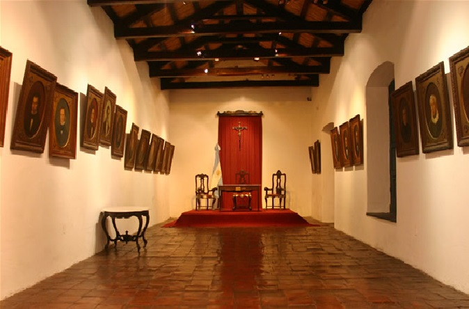
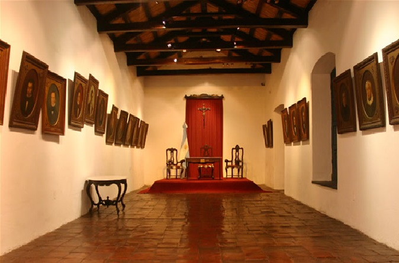

Tucuman
Tucumán es la cuna de la independencia argentina. Fue aquí donde se firmó la Declaración de la Independencia en 1816. La provincia tiene una rica historia y cultura que se puede explorar en sus museos, iglesias, plazas y monumentos. tambien es conocida por tener una gran variedad de paisajes naturales, desde las montañas de los Valles Calchaquíes hasta las selvas de Yungas.
Lugares a visitar
Casa historica de la independencia
 

La Casa Histórica de la Independencia es un lugar emblemático de la provincia de Tucumán y de toda Argentina, ya que en ella se llevó a cabo la histórica Declaración de la Independencia en 1816, que marcó el inicio de la soberanía del país, Además de su importancia histórica, la Casa Histórica es un museo que alberga numerosas reliquias y objetos de la época colonial y de la Independencia de Argentina, como por ejemplo mobiliario, armas, documentos y obras de arte.

Catedral de San Miguel
La Catedral de Tucumán es una de las iglesias más antiguas y emblemáticas de Argentina, ya que fue construida en el siglo XVIII durante la época colonial española. Además, en su interior se celebró la primera misa que se ofició en la ciudad y en sus alrededores se llevó a cabo la Batalla de Tucumán durante la guerra de la Independencia, La catedral es un ejemplo de la arquitectura colonial española en Argentina, con una fachada sobria y elegante de estilo neoclásico y un interior de estilo barroco.
Tafi Del Valle
Tafí del Valle se encuentra en el corazón de los Valles Calchaquíes, rodeado de imponentes montañas y una naturaleza espectacular. Hay muchos lugares naturales que vale la pena visitar en la zona, como el lago de la Angostura, el Parque Los Menhires y el Parque Nacional Campo de los Alisos,Puedes hacer senderismo por los diversos senderos que hay en la zona, pasear en bicicleta, hacer pesca deportiva en el lago, y disfrutar de deportes acuáticos como canotaje y paseos en barcos.